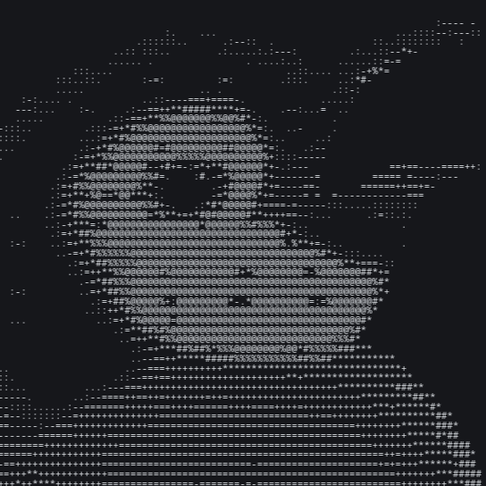

TU VOZ EN DISCORD
PenguSpeak
Convierte mensajes en voz. Dale vida a tu servidor.
DESLIZA PARA DESCUBRIR ↓
#general
Heather está escribiendo
Mensaje enviado a #general
CANAL DE VOZ ● CONECTADO
Tus amigos escuchan

PenguSpeak habla por ti.
«¡Esperen, que ya voy!»
Esta es una simulación. En Discord, PenguSpeak reproduce los mensajes sin que tengas que pulsar este botón.
No hace falta un micro.
También tienes voz.
¿No puedes hablar por el micrófono? Escribe lo que quieras decir y PenguSpeak lo dice por ti, directamente en el canal de voz.
VOCES DE PENGUSPEAK
Ponle voz al asunto.
Muestras pregrabadas. Funciona en GitHub Pages sin servidores externos.
Un pingüino con
mucho que contar.
Distintas voces, distintos acentos. Encuentra tu favorita.